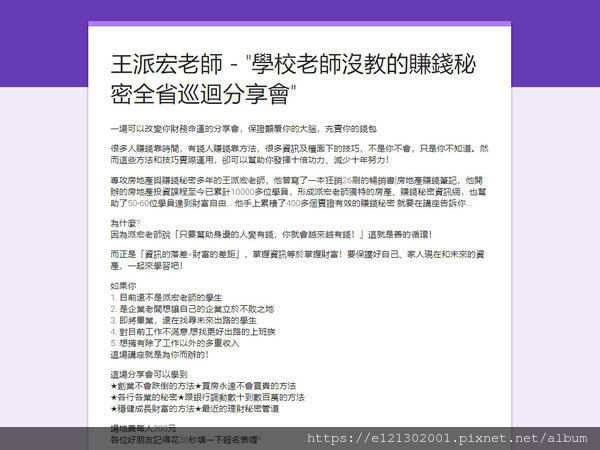

炒房名師王派宏捲25億 [懶人包]

炒房名師王派宏疑「捲25億」失了 受害者嘆：真的活不下去
房仲名師王派宏驚傳吸金25億「失蹤了」，消息一出震撼房產投資界。67年次的王派宏自稱炒房專家，在全台授課分享理財，不過卻有顧問公司透露，上月28日開始就聯繫不上他，以為發生危險才立刻報案，但王卻已離開台灣。有學員近日出面控訴稱，4月向王派宏大量簽約後，反而血本無歸，如今王人間蒸發，「真的會活不下去」 早年透過房產集資的同一群人，開班授課、賺取房市價差；但這幾年「市場壞了」， 其實就是房地產詐騙的延伸。利用房地產心法、同樣宣稱高報酬率，騙取投資人持續投入資金，最後捲款潛逃。專家提醒，「現在還宣稱開班教你投資房地產能賺錢的，8成以上都是騙局。」 王派宏自稱炒房專家，在全台授課分享理財。曝光的文宣資料寫道，「很多人賺錢靠時間，有錢人賺錢靠方法，很多資訊及檯面下的技巧，不是你不會，只是你不知道。然而這些方法和技巧實際運用，卻可以幫助你發揮十倍功力、減少十年努力！」
這一類開班授課的專家，業界俗稱「財商掛」，集資小眾資金尋找市面上地段、屋況相對差的物件，再開班授課、收取學費分享投資心法；學生上過課後，再由「財商老師」帶領學生，進入市場尋找投資物件。 據了解，王派宏的投資項目非常多，除了房產、股票外，他還曾鼓吹會員「將黃金磨成粉」，進印度轉賣。王派宏的好友林茂盛4月30日在臉書發文也提到此事，「堅守了這麼多年的原則貞操就這樣破戒了，在一番詢問很多學員去印度的狀況還有在印度工作的學員工作狀況，還查了香港的狀況，我查證了很多後就這麼傻傻的相信了。」 此種手法手傳授賺錢經驗，非常受到投資、理財經驗不足的菜藍族、上班族歡迎。據悉，林茂盛曾與王派宏一起出「學校老師沒教你的賺錢秘密」一書，開班授課，15年來吸引不少死忠粉絲跟隨投資。不過投資詐騙事件時有所聞，讓「財商」變成「傷財」。
「剛開始講師都會用超便宜的費用讓大家來聽課、之後要你加入將近4萬塊的課程，但這還只是開始，進去才知道根本不是這麼一回事。」「天下沒有白吃的午餐，現在宣稱投資房地產或者商品，能獲取報利的，大多都有你看不見的騙局。」 
遭到會員報案，涉及吸金詐欺的「老師」王派宏，從10多年前，就已經在開課，傳授投資的秘訣，不只開班收學生、上節目，甚至成為暢銷書作家，全盛時期，旗下會員據說超過3萬人，不過現在會員們怎麼也找不到他，希望王派宏趕快出面。 打著專業又風趣的形象，王派宏，每次講座，都是爆滿，不只是暢銷書作家，也上過節目。 王派宏，從投資客變成講師，已經有15年資歷，鼎盛時期，會員超過3萬人，傳出會員入會費達3.6萬元，不少人跟著他投資。 王派宏課程：「估出來市價是1千萬，最多只能貸到8成8百萬，假設你想要賣1千萬的話你要開多少。」
一年超過10場講座，過去還曾經到馬祖，所以會員全台都有。 王派宏課程：「比較一下澳門賭場的狀況，澳門賭場在還沒蓋好跟蓋好後，漲最多的當然是賭場的中心，以馬祖來說就是大澳山，那座山那邊。」 現在人失聯超過3天，引發會員擔憂，光是拿錢出來投資的民眾，可能超過千人，不少人還找家人以及朋友一起，而還有會員透露，他的親哥哥以及弟弟的錢，也分別拿出了一千萬以及八百萬，連家人也找不到他。
財商界名師王派宏疑似在2019四月28日晚間失蹤，隔天台南分享會竟沒到場 一向讓人值得信任又做過公益活動的名師，一夕之間人間蒸發，連自己的家人朋友都不放過， 造成上千位名眾錢財大損失，事情也波及到越來越多的受害人導致生活作息大亂， 盼王派宏早日出面給大家有個交代，也希望大家能夠振作起來
疑似猶如男版貴婦奈奈，吸金20億後，人從星期天開始失聯，被查出已經出國。 今天有投資者出面控訴，說一開始只是上課學怎麼賺錢，但王派宏會一對一面談， 鼓吹學員們去向親朋好友集資，或向銀行借貸，因為投資他，每三個月就能拿高報酬率的紅利， 期滿還能拿回本金。只是四月他大量簽約後，如今突然消失，讓許多投資者說，真的會活不下去。
投資學員：「最慘的是，我是今年的4月1日才剛剛簽約，我們總共的投資金額是1400多萬， 現在事情一爆發出來，我們身上的壓力有多沉重，有些人都快活不下去了。」 一張張合作契約，有投資500萬、130萬、150十萬。最大面額就屬這張， 從今年四月一號起為期一年，內容是郵寄精品，投資六百五十萬， 還強調會每三個月發利息，等期滿還能取回本金。 投資學員：「最先開始我們也是只有很單純的上課，到最後一對一的面談當中， 他就報我們說，我可以給你們一些好康的，只要你們可以投資我， 你們就是定期收取利息，我也會開本票給你們，然後到期的時候本金你就拿回去， 在此中間你想要任何時間，拿回去本金都沒有問題。」 彈性的投資方式， 每季高投資獲利，叫人心動，再用一對一面談方式洗腦，鼓吹學員去借錢來投資。 投資學員：「他的報酬率是比銀行高大概20%左右，我們也是真的觀察了很久， 跟親朋好友募資借來的，甚至他在這個課程，最先開始鼓吹，就是你們去跟銀行借款。」 合約到期，就鼓勵繼續加碼，而四月開始，更大量簽約，有些人連一季的紅利都沒拿到，就爆發他疑似捲款的消息。
投資學員：「最慘的是，我是今年的4月1日才剛剛簽約，我們總共的投資金額是1400多萬， 現在事情一爆發出來，我們身上的壓力有多沉重，有些人都快活不下去了。」 一張張合作契約，有投資500萬、130萬、150十萬。最大面額就屬這張， 從今年四月一號起為期一年，內容是郵寄精品，投資六百五十萬， 還強調會每三個月發利息，等期滿還能取回本金。 投資學員：「最先開始我們也是只有很單純的上課，到最後一對一的面談當中， 他就報我們說，我可以給你們一些好康的，只要你們可以投資我， 你們就是定期收取利息，我也會開本票給你們，然後到期的時候本金你就拿回去， 在此中間你想要任何時間，拿回去本金都沒有問題。」 彈性的投資方式， 每季高投資獲利，叫人心動，再用一對一面談方式洗腦，鼓吹學員去借錢來投資。 投資學員：「他的報酬率是比銀行高大概20%左右，我們也是真的觀察了很久， 跟親朋好友募資借來的，甚至他在這個課程，最先開始鼓吹，就是你們去跟銀行借款。」 合約到期，就鼓勵繼續加碼，而四月開始，更大量簽約，有些人連一季的紅利都沒拿到，就爆發他疑似捲款的消息。
投資學員：「最慘的是，我是今年的4月1日才剛剛簽約，我們總共的投資金額是1400多萬， 現在事情一爆發出來，我們身上的壓力有多沉重，有些人都快活不下去了。」 一張張合作契約，有投資500萬、130萬、150十萬。最大面額就屬這張， 從今年四月一號起為期一年，內容是郵寄精品，投資六百五十萬， 還強調會每三個月發利息，等期滿還能取回本金。 投資學員：「最先開始我們也是只有很單純的上課，到最後一對一的面談當中， 他就報我們說，我可以給你們一些好康的，只要你們可以投資我，你們就是定期收取利息， 我也會開本票給你們，然後到期的時候本金你就拿回去，在此中間你想要任何時間，拿回去本金都沒有問題。」 彈性的投資方式，每季高投資獲利，叫人心動，再用一對一面談方式洗腦，鼓吹學員去借錢來投資。 投資學員：「他的報酬率是比銀行高大概20%左右，我們也是真的觀察了很久，跟親朋好友募資借來的， 甚至他在這個課程，最先開始鼓吹，就是你們去跟銀行借款。」 合約到期，就鼓勵繼續加碼，而四月開始，更大量簽約，有些人連一季的紅利都沒拿到，就爆發他疑似捲款的消息。
67年次的房地產投資騙子王派宏捲款二十五億台幣不知去向，比騙了十億多的貴婦奈奈還行!醜男美女都是行騙高手，這是台灣奇蹟嗎? 真正不可思議的是台灣人為何如此好騙?二十五億耶!王某騙這麼多已成為名副其實的大富翁，可以像已在加拿大享受財富的貴婦那樣悠哉悠哉過下半輩子! 查看王派宏的相片發現有幾個特徵: A看不見脖子以下胸膛:第一個鈕扣必扣。穿高圓領T恤，若領口較低就會有高筒內搭遮住脖子以下部分。難道他胸膛有刺青、大片胎記或傷痕?這樣遮遮掩掩透露出此人個性有隱藏的黑暗面，可信任度不會高! B穿著輕便乾淨:口袋看不出有裝任何東西，腰帶甚麼也沒掛，沒拿公事包，沒背包包…..，這樣清爽的穿著看了很舒服，但其實這透露此人不喜有負擔，多半是好吃懶做，沒責任心的人! 遇到有AB這兩點的人就要提高警覺。然後再角色互換想一想，如果我是他，我會像他那樣嗎?二十歲失戀，三十歲就賺到千萬，現在還好心教大家發財，還成立公益社團…..!能像他那樣應該不容易吧?長得醜又不高，失戀後必定是很痛苦，忌妒高又帥的男人能偎紅依翠，所以總是一臉怒容，暴躁易怒…..，這應該是一般人會有的反應! 王某卻好心地把發財秘方教大家，這其實就不正常了!可台灣人因為嘗過[耕者有其田]的美味，老是相信真有人會幫他人發財，可說是患了耕者有其田症候群，要救很難! 真正的富翁是不會教人發財方法的，這麼簡單的道理偏偏台灣人不信，實在是中毒很深!所謂財不露白，教人發財不是不可能，可那大部份是有發財理論的窮人會幹的事，真正的富翁會擔心接踵而來的麻煩，因為來學發財術的升斗小民外，黑道流氓也都會蜂擁而來，錢露白在台灣大多是凶多吉少，除非他是高級外省人或黑幫老大。 想通了這一點就知道有錢人必定是安靜地自己賺，不大可能會敲鑼打鼓，更遑論把好康跟大家分享，可台灣就是有那麼多愛被騙的人，真的是奇蹟!
1.當初的房地產,(他的弟子也有開課,我參加完的結論是,房地產不要碰還是比較好XDD) 2.跨足及集資股票(這時候就開始有投資了,朋友A當了招集人,集中了很多資金去投,因為他們是不收小筆投資的,A也有去了解對帳單之類的)因為這個有保本計畫,衝著這點我也下去投了,但真的很有檢討的點!!!) 3.黃金事業:這個就比較會有點法律爭議我就不多談了,但衝著這點我知道這樣會有報酬是真的!!! 沒想到,竟然是假的!!!,朋友A有去聽也有去實踐這個制度,但竟然還是個騙局!!!(朋友A本身也算是派宏員工) 王派宏已經捲款逃跑了,只有他和他夫妻知情,他家人 妹妹 全部高低階員工都不知道!!! 實在是太誇張了!!!
1.投資是有賺有賠沒錯,但要真正的完全的徹底的了解你到底在投資甚麼東西,“我對人心失望,但我並沒有對人心絕望”,EX:王派宏集資逃跑,館長集資開健身中心,兩人一開始有甚麼擔保品嗎?我猜一定甚麼都沒有, 但其實我以為王派宏是有的,沒想到現在檢調發現他在台灣根本就沒有資產!?(朋友A說的),我真無言 以後我投資只會投那種有保險的,股票劵商倒有保險,銀行存款銀行倒也有保險,連銀行借錢給你你都要提供大於金錢的擔保了!!! 2.以後這種事件還會發生嗎?會!!一定會,但只有被騙過一次才會知道當你在騙局當中根本不會知道,還是要提醒自己,“我對人心失望,但我並沒有對人心絕望”一定還是有那種沒有擔保又好的投資案, 但不可能分辨的出來的,真的不要貪不要碰就好 3.就算要投資,這種高風險資產不要站你資產負債表的太高比例,千金難買早知道,(早知道我就調降比例了.這種想法很無聊,早知道就早抽身不是嗎),重點是我以後不會再碰了,不會!!! 4.事情發生後,日子還是要過,為了彌補這個資金缺口,我的生活會做些開源節流的調整,也是我對我自己的教訓